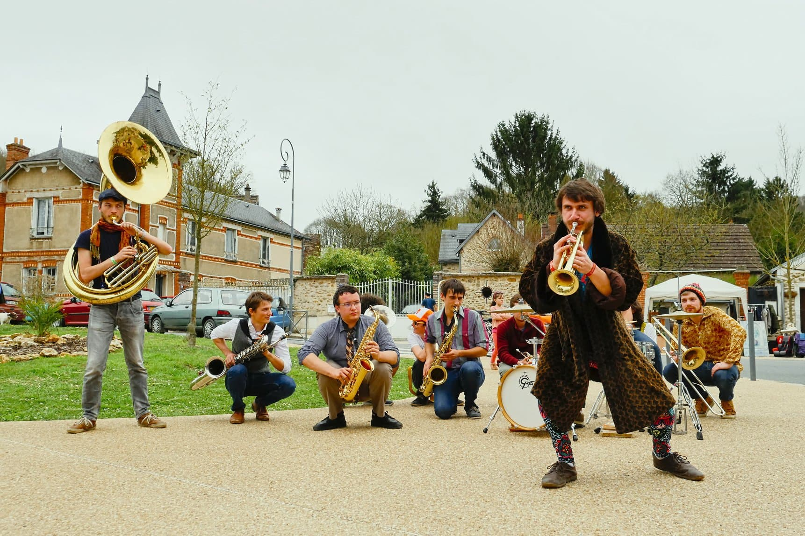
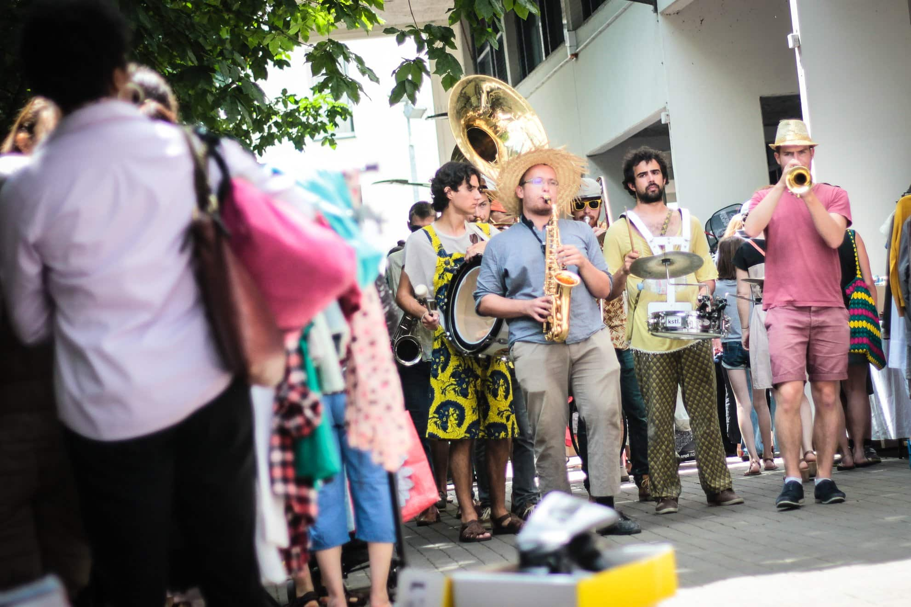

Bonjour ! Nous sommes les
Loud’N Around, un brassband qui a réalisé un projet de
fanfare solidaire.
Nous sommes 12 étudiants de Centrale Paris, issus de la fanfare de l’école.
Pendant un voyage international de 6 mois, à partir de janvier 2019, nous avons partagé notre
passion pour
la musique
en proposant des ateliers d’éveil musical à des enfants défavorisés.
Découvrez notre aventure à travers notre film et notre album ci dessous.

Notre projet
Loud’N Around est une
association de loi 1901 réunissant 12 étudiants convaincus de l’apport
pédagogique que peut
avoir
la musique.
Pendant 6 mois, à partir de janvier 2019, dans 4 pays différents nous nous sommes intégrés
auprès d’ONG locales
afin de proposer
des
ateliers d’éveil musical
aux enfants accompagnés par ces ONG.
Le voyage des LNA n'est pas fini ! Après le report de l'édition 2021, LNA Brass Band sera
présent
au festival du Chant de Marin à
Paimpol du 4 au 6 août 2023.
Ce sera l'occasion de nous retrouver au côté d'autres artistes dans les rues de Paimpol, et
d'écouter des morceaux jamais sortis sur notre album.
C'était un week-end froid, mais surtout très sympathique, à Troyes ! Noël oblige, nous avons
sorti les leggings
de saison avec bonnets et pulls fantaisistes, ils ont fait leur petit effet !
Les Féeries d'Auteuil 2018 nous ont cordialement invités à animer l'évènement le week-end
dernier. La fanfare la
plus cool a répondu présent !
C'est dans une ambiance magique et inspirante que nous avons joué samedi et dimanche, les
sourires émerveillés
des spectateurs étaient présents et nous réchauffaient le cœur en ces jours froids de
décembre !
Pour notre premier concert dans un bar sur Paris, LNA était bien accompagné: ce n'était pas
moins de 5 fanfares,
toutes issues du projet Fanfares Sans Frontières, qui ont joué ce soir là.
Ce week-end était en effet l'occasion d'échanger et partager les connaissances avec d'autres
fanfares, certaines
ayant déjà voyagées et d'autres commençant à peine les préparatifs.
En bref, Fanfares Sans Frontières c'est une belle famille, avec de nombreux autres projets
intéressants que l'on
vous invite à découvrir sur le site FSF !
Le projet avance bien, le jour du grand départ se rapproche, et nous avons aujourd'hui besoin
de votre aide !
Nous partirons de janvier à juillet 2019 au Burkina Faso, au Vietnam, au Cambodge et en
Bolivie afin de
réaliser des ateliers d'éveil musical auprès d'enfants en situations difficiles et en étroit
partenariat avec
des ONG locales.
Aujourd'hui, la préparation est presque terminée et nous sommes en train de régler les
derniers détails.
Ce crowdfunding est justement là pour nous permettre de boucler notre budget, et pour vous
permettre, vous
aussi, de participer au projet !
Pour ceux qui ne connaissent pas le fonctionnement d'une plateforme de financement
collaboratif, le principe
est simple : les dons que vous faites seront récompensés à terme par une contrepartie de
notre part, comme notre
t-shirt (quand il sera prêt, chut !), notre cd avec nos derniers morceaux en fin de voyage
(quand il sera fini),
des souvenirs des pays visités (quand ils seront visités)...
Encore un week-end plein de soleil et d'amour ! Après un certain nombre de prestations, les
LNA reviennent en
force se produire dans les places iconiques de Paris.
Ainsi les sets se sont enchaînés toute la journée, tantôt devant l'Opéra Garnier, tantôt sur
la Place du
Palais-Royal, puis ultimement devant les Halles.
Une belle rencontre devant les Halles d'ailleurs, car nous y avons rencontré des collègues
fort sympathiques :
la Fanfare Poulpe et leur style déjanté.
Samedi dernier était ensoleillé, les LNA ont déambulé toute la journée dans les rues de
Saint-Gratien,
Ile-De-France, France à l'occasion de la fête des commerçants.
Les commerçants ont profité de l'animation musicale, les musiciens de l'hospitalité des
commerçants, et tout
le monde du soleil !
Cela a également été l'occasion de faire une belle rencontre avec Freestyle
UP ! Voici une vidéo de notre collaboration avec eux, partageant un moment de
plaisir improvisé sur l'un de
nos morceaux, une reprise de Sweet Dreams par les Soul Rebels, merci à tous pour ce bon
moment !
Vendredi dernier nous animions un anniversaire. La bonne ambiance était au rendez-vous !
Pas plus tard que le lendemain même, l’Association
des Commerçants Louvre-Rivoli nous a invités à déambuler dans les rues pour animer
la journée bien
ensoleillée de samedi. Nous remercions l'hospitalité de tout les commerçants et passants qui
nous ont écouté
jouer !
Ce week-end nous avons animé l'opéra de Massy, Ile-De-France, France, avant de partir
déambuler dans les rues
d'Étampes soutenir l'évènement Nettoyons
la Nature ! Les enfants étaient ravis de pouvoir essayer nos
instruments à la fin du set
Loud'N Around, c'est avant tout un groupe d'amis passionés par la musique, le voyage et le
partage.
LNA, c'est une véritable équipe, de niveau musical, origines et parcours variés qui
s'unissent pour proposer
des
animations de qualité, et construire un beau projet, et tout cela toujours dans l'amour et
la compréhension !
Découvrez les sans plus attendre sur la nouvelle page dédiée !
Samedi nous jouions pour la fête du village de Brueil-en-Vexin ! Merci à l'organisation et à
ceux qui nous
ont
écouté animer cette sympathique fête !
Le lendemain, réveil aux aurores pour pouvoir animer La Parisienne
pendant toute la matinée ! Une très bonne organisation et ambiance pour cet évènement
sportif !
Un de nos engagements en tant que Fanfare
Sans Frontières
est de travailler au plus proche des enfants, dans une structure à taille humaine. C'est un
choix tellement
important qu'il conditionne nos destinations
La recherche et la selection a constitué un travail de longue haleine, sur presque 5 mois,
mais c'est avec
plaisir que nous pouvons maintenant vous les présenter !
Burkina Faso, Vietnam, Cambodge et Bolivie, LNA fait le tour du monde.
Le soleil était au rendez-vous, et les Loud’N Around aussi !
Nous avons profité de la trêve estivale pour être présent partout, tout le temps, mais
surtout toujours en
musique.
Que ce soit à l'Opéra Garnier, à la Comédie Française ou aux Halles, vous aviez de bonnes
chances de nous
entendre jouer.
Pour ne pas nous rater, n'hésitez pas à nous suivre sur notre page Facebook
ou Instagram !
Fête des commercants, escapade à vélo et vide-grenier

C'était un week-end chargé pour la fanfare LNA !
Le samedi nous déambulions dans les rues ensoleillés du 17eme arrondissement à l'occasion de
la fête des
commerçants du boulevard
Berthier. ☀️🎶 Bravant la chaleur, nos chers fanfarons ont animés l'avenue tout
l'après-midi.
Puis le dimanche dès 9h du matin, nous étions présent devant la gare Massy TGV pour motiver
les cyclistes de la
Convergence
francilienne 2018 🚲. Pas de temps à perdre, nous déambulions dès la fin de matinée dans les
rues de Villejuif
pour
égayer le vide-grenier du centre-ville.
Du soleil et un public enthousiaste, que demander de plus ?
Nous avons animé le carnaval de Montigny les Cormeilles ! Pas moins de 5 fanfares et
batucadas, un soleil
radieux, des enfants
ravis, un repas offert, quoi de mieux ? Encore merci !
Dimanche nous animions la fête de la Saint-George de la ville de Sermaise ! Du soleil, un
public ravi, et le
très sympathique
Antoine Delpeut dont voici les clichés, ont su donner une touche de merveilleux à cet
après-midi de printemps.
Nous animions ce week-end la conférence O21 organisée par Le Monde sur les métiers de
demain. Une belle
occasion
de faire
de la musique et de parler de notre projet !
Bonjour le monde, nous sommes les Loud'N Around ! Loud'N Around, c'est un groupe de 12
étudiants musiciens de
l'École
Centrale Paris, décidés à partager avec le monde entier leur passion de la musique en
proposant des ateliers
d'éveil
musical pour les enfants défavorisés. Pendant l'année 2018 nous allons préparer notre grande
expédition vers
l'inconnu,
prévue pour Janvier 2019.